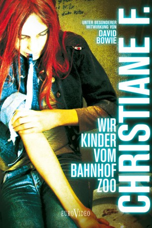

#5300 Christiane F. - Wir Kinder vom Bahnhof Zoo
 
 IMDB-Wertung: 7.6 / 10
IMDB-Wertung: 7.6 / 10  Metascore: 0
Metascore: 0 
Vom Hasch kam sie zum Heroin. Die Sucht zwang sie auf den Strich zu gehen. Sie erlebte den Himmel und sie erlebte die Hölle. Christiane F.. Mit 14 Jahren hatte sie schon alles durchgemacht, was in der Szene los war. Mit 15 Jahren war sie am Ende. Rauschgift, die Droge, die vermeintlich "Freiheit" verschafft, bietet letztendlich doch nur Siechtum und Tod. Christiane F. schaffte den Ausstieg aus der Szene. Viele andere aber bleiben zurück und setzen sich eines Tages den letzten, den "goldenen Schuß". Sie sind noch Kinder und haben doch schon ihre ganze Zukunft verspielt.
Jahr: 1981
Dauer: 131 Minuten
FSK: 16
Land: West-Deutschland Studio: Neue Constantin FilmTonspuren:
Untertitel:
Auflösung: 1080p (1920x1080) Größe: 10076 MB
Genre: Drama, Biographie
Regisseur: Uli Edel
Drehbuch: Xavier Gens
Soundtrack:
Darsteller:
- Natja Brunckhorst als Christiane
- Eberhard Auriga als Alter Fixer
- Peggy Bussieck als Puppi
- Lothar Chamski als Rolf
- Rainer Woelk als Leiche
- Uwe Diderich als Klaus
- Jan Georg Effler als Bernd
- Ellen Esser als Kessis Mutter
- Andreas Fuhrmann als Atze
- Thomas Haustein als Detlev
- Lutz Hemmerling als Bienenstich
- Daniela Jaeger als Kessi
- Bernhard Janson als Milan
- Jens Kuphal als Axel
- Christiane Lechle als Christianes Mutter
- Kerstin Malessa als Tina
- Christiane Reichelt als Babsi
- Kerstin Richter als Stella
- Cathrine Schabeck als Linda
- Stanislaus Solotar als Stottermaxe
Datei: X:\1981\Christiane F. - Wir Kinder vom Bahnhof Zoo (1981, FSK16, 1920x1080).mkv seit 11.01.2017
Festplatte: HD 1980-1986
 Es gibt insgesamt 33 Filme in der Gruppe '1981'
Es gibt insgesamt 33 Filme in der Gruppe '1981'